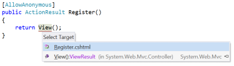

参考文献
参考提供程序是ReSharper中非常强大的扩展机制。它们用于创建从PSI抽象语法树（AST）中的一个节点到同一文件或单独文件中另一节点的引用。
ReSharper以多种不同方式使用这些引用：
- 导航，例如Ctrl + Click
- 查找用法
- 重命名重构
- 代码补全
- 突出显示无效引用（例如，未定义的方法）
在此列表的基础上，引用的一种明显用法是代码元素，例如方法或变量名。很容易看到变量名如何引用变量声明。ReSharper可以解析引用，并将此目标用于导航或查找使用结果。它可以告诉引用重命名它附加的元素，或者，如果引用找不到目标，则将附加的元素显示为错误。
一种不太明显但同样有效的机制是将引用附加到语法树中的其他元素，例如xml doc注释，甚至字符串文字。这允许所谓的“魔术字符串”参与Ctrl + Click导航，查找用法，代码完成，更重要的是，重命名重构。引用甚至可以应用于树节点的一部分，从而允许在字符串文字或其他节点内的单个单词上进行引用。
例如，引用与ASP.NET MVC的视图和动作名称一起使用。Ctrl +单击字符串文字，将导航到视图或操作的控制器方法。

参考提供者以以下情况开始生活： IReferenceProviderFactory ，进而创建一个实例IReferenceFactory给定文件。的IReferenceFactory然后创建一个或多个实例IReference对于PSI树中的任何给定节点。
创建参考提供者
提供引用的主要入口点是一个实现的类IReferenceProviderFactory 。该课程应标有ReferenceProviderFactoryAttribute ，这是一个SolutionComponentAttribute ，表示该类对每个解决方案实例化一次（并在解决方案关闭时销毁）。该类应实现以下成员：
public interface IReferenceProviderFactory { IReferenceFactory CreateFactory(IPsiSourceFile sourceFile, IFile file); event Action OnChanged; }的CreateFactory方法同时接收IPsiSourceFile提供有关文件的元数据的对象，以及IFile对象，它是PSI树的根。它可以使用这些文件来确定是否支持为此文件类型创建引用。例如，它可以查看文件的语言：
if (sourceFile.PrimaryPsiLanguage.Is<CSharpLanguage>()) return new MyReferenceFactory(); return null;如果支持文件语言，则IReferenceFactory创建并返回。如果不是，则返回null，表示此引用提供者在这种情况下不提供引用。
的IReferenceProviderFactory界面还提供了OnChanged事件。ReSharper订阅此事件，并在触发该事件时重新创建任何关联的引用。例如，如果可以通过选项页上的标志禁用参考提供程序，则此功能很有用。
创建参考
的IRefrenceProviderFactory返回的实例IReferenceFactory用于特定的PSI文件。此类负责为文件中的给定节点创建一个或多个引用。它有两种方法：
public interface IReferenceFactory { IReference[] GetReferences(ITreeNode element, IReference[] oldReferences); bool HasReference(ITreeNode element, ICollection<string> names); }在创建引用之前， HasReferences方法被调用，传入ITreeNode这将是引用的来源，例如变量或字符串文字等。传入的名称集合用于帮助验证缓存的引用-如果节点没有该名称的任何引用，则即使PSI树已更改且缓存（严格来说）已过时，也不必重新创建缓存的引用。
实施HasReferences通常非常简单。引用可以具有一个或多个名称。通常，它只有一个名称-PSI节点的文本。例如，添加到方法调用的引用将以该方法的名称作为引用名称。如果一个元素可以通过多种方式引用，例如“ TestAttribute”可以用作一个引用，则引用可能具有多个名称。 [TestAttribute]要么[Test] 。
我们将使用引用提供程序的示例，在字符串文字和属性名称之间添加引用，以支持nunit的引用。 [TestCaseSource("MyProperty")]属性。这是实现HasReferences ：
public bool HasReference(ITreeNode element, ICollection<string> names) { // Check it's a string literal, and the text of the // string literal is in the collection of names var literal = element as ILiteralExpression; if (literal != null && literal.ConstantValue.Value is string) return names.Contains((string) literal.ConstantValue.Value); return false; }请注意，此实现并没有进行详尽的检查-它看起来该节点是字符串文字，但不是它是属性声明中的字符串文字，其中属性名称为TestCaseSourceAttribute 。这只是一种快速检查，可以尝试使不必要的缓存重新验证短路。
如果消费者未传递名称集合， HasReferences不被调用，并且使用或重新计算了缓存的引用。
要实际获取引用，ReSharper会调用GetReferences 。它传入PSI树节点和一个现有引用数组，并期望返回一个引用数组。以我们的nunit为例[TestCaseSource("MyProperty"]) ，用于在字符串文字“ MyProperty”和当前类“ MyProperty”的属性之间创建引用的代码如下所示：
public static readonly ClrTypeName TestCaseSourceAttribute = new ClrTypeName("NUnit.Framework.TestCaseSourceAttribute"); public IReference[] GetReferences(ITreeNode element, IReference[] oldReferences) { var literal = element as ILiteralExpression; if (literal != null && literal.ConstantValue.Value is string) { var argumentExpression = literal as ICSharpExpression var attribute = AttributeNavigator.GetByConstructorArgumentExpression(argumentExpression); if (attribute != null) { var @class = attribute.Name.Reference.Resolve().DeclaredElement as IClass; if (@class != null && Equals(@class.GetClrName(), TestCaseSourceAttribute)) { var method = MethodDeclarationNavigator.GetByAttribute(attribute); if (method != null && method.DeclaredElement != null && typeElement == null) { typeElement = method.DeclaredElement.GetContainingType(); } if (typeElement != null) { return new IReference[] { new PropertyDataReference(typeElement, literal) }; } } } } return EmptyArray<IReference>.Instance; }该过程分解如下：
- 检查节点是否为字符串文字
- 使用
AttributeNavigator在构造函数中给定参数的情况下查找属性。这将从字符串文字中查找PSI树，以查找属性用法。找不到属性，返回null - 通过获取属性的类名称
Name属性，它本身就是对TestCaseSourceAttribute类。解析引用，获取已声明的元素，并确保该属性是的实例NUnit.Framework.TestCaseSourceAttribute - 使用
MethodDeclarationNavigator查找将属性应用于的方法声明 - 从方法声明中，获取包含的类型。查找具有与字符串文字相同值的属性是必需的
- 使用自定义类创建新的引用
PropertyDataReference（在下一节中详细介绍），传入类声明和字符串文字节点
请注意，此方法不会尝试解析引用-它不会查看由字符串文字命名的属性是否存在于类型上。这由参考处理。如果无法解析，则引用无效，并且ReSharper会将字符串文字标记为未解决的错误。
另请注意，此实现未利用oldReferences参数。理想情况下，引用提供者应检查旧引用以查看它们是否仍然有效。这意味着什么取决于参考的上下文。在这种情况下，我们可以检查旧引用的字符串文字是否具有相同的值，并且type元素仍然有效。在这种情况下，我们可以直接返回旧引用。另一种策略是创建新的引用并在返回之前进行比较。如果旧引用相同，则返回旧引用实例。
最后，如果元素可以有多个目标，或者可以将节点分解为可以作为引用的子字符串，则返回多个引用是完全可以接受的。例如，MVC View()方法可以有多个引用，一个是方法的定义View一是与包含控制器方法相关联的视图。如果单个元素上有多个引用，则在按Ctrl + Click时，ReSharper将显示一个弹出菜单，其中包含导航目标。同样，应用于代表文件路径的字符串文字的文件路径引用提供程序为每个路径段返回一个新的引用。也就是说，“ C：\ work \ projects \ foo.txt”返回4个引用，每个路径段一个。
（还请注意，这是对以下内容的支持的不完整实施： TestCaseSourceAttribute 。它还应支持SourceType值，以允许在不同的类上定义属性。为此，您将找到一个ITypeofExpression并使用它来获取传递给引用的type元素。）
实施参考
的IReference接口具有以下结构：
public interface IReference : IUserDataHolder { bool HasMultipleNames { get; } ResolveResultWithInfo CurrentResolveResult { get; set; } ITreeNode GetTreeNode(); string GetName(); IEnumerable<string> GetAllNames(); ISymbolTable GetReferenceSymbolTable(bool useReferenceName); ResolveResultWithInfo Resolve(); TreeTextRange GetTreeTextRange(); IReference BindTo(IDeclaredElement element); IReference BindTo(IDeclaredElement element, ISubstitution substitution); IAccessContext GetAccessContext(); bool IsValid(); }Resolve和CurrentResolveResult用于查找参考的目标。他们返回一个ResolveResultWithInfo包含结果（OK要么NOT_RESOLVED，等等）和信息，例如IDeclaredElement那是目标HasMultipleNames和GetAllNames允许引用具有多个名称。通常，引用将只有一个名称，该名称将与owner元素的文本相对应（此构造方法的一个例外是构造函数初始化程序，其名称为this要么base）。但是，对属性的引用可以有多个名称-一个属性可以用作[Test]要么[TestAttribute]。在这种情况下HasMultipleNames应该返回true，并且GetAllNames应包含全名和截断的名称GetTreeNode和GetTreeTextRange从树中返回节点以及树中作为引用源的范围。通常，这是树节点的范围-GetTreeNode().GetTreeTextRange()。但是，可以在此处返回不同的范围，以允许引用成为节点的子字符串，例如字符串文字中的单个单词GetReferenceSymbolTable应该返回一个实例ISymbolTable包含与参考相关的符号。使用TestCaseSourceAttribute例如，这将返回属性所关注类型的所有符号。如果通过true为了useReferenceName参数，将滤除符号以匹配引用的名称GetAccessContext返回的实例IAccessContext。通常可以将其推迟到ElementAccessContext，传入所有者树节点BindTo允许引用参与重命名重构。引用绑定到使用新名称创建的PSI树中的新元素。它应该更新其owner元素以反映此更改。
通常，没有必要实现整个接口，而是从基类派生的，例如TreeReferenceBase 。这将owner元素的类型作为类型参数，例如TreeReferenceBase 。它还会保留对的调用的缓存结果Resolve 。
解决结果
当实现派生自TreeReferenceBase ，最有趣的实现方法是ResolveWithoutCache 。为了我们TestCaseSourceAttribute例如，实现如下所示：
public override ResolveResultWithInfo ResolveWithoutCache() { return GetReferenceSymbolTable(true).GetResolveResult(GetName()); }这符合GetReferenceSymbolTable ，传入true即可将符号表过滤为仅与参考名称匹配的那些符号。然后使用ISymbolTable.GetResolveResult获得一个的方法ResolveResultWithInfo参考名称的实例。的ResolveResultWithInfo类维护结果以及错误类型。结果可以访问已声明的元素，如果找到了多个可能的值，则可以访问候选元素。错误类型使用ResolveErrorType枚举模式类，并且可以是许多值之一。最受欢迎的包括ResolveErrorType.OK ， ResolveErrorType.IGNORABLE ， ResolveErrorType.NOT_RESOLVED等等。也有子类型ResolveErrorType提供更明确的错误，例如CSharpResolveErrorType.OPERATOR_IS_NOT_APPLICABLE要么CssResolveErrorType.CLASS_NOT_RESOLVED 。您使用哪种值取决于您的情况-您可以只使用从ISymbolTable ，或在中使用预定义错误之一ResolveErrorType和派生类。
如果不是ResolveErrorType.OK ，则将其视为无效引用，并且所有者树节点将被标记为错误。
一旦ResolveWithoutCache方法已被调用，该值存储在CurrentResolveResult直到所有者树节点更改。
GetReferenceSymbolTable
此方法应返回一个符号表，其中包含与参考有关的所有符号。如果useReferenceName参数是false ，它应返回一组可用作参考目标的候选对象。例如，在我们的TestCaseSourceAttribute参考，我们可以这样实现：
public override ISymbolTable GetReferenceSymbolTable(bool useReferenceName) { var symbolTable = ResolveUtil .GetSymbolTableByTypeElement(typeElement, SymbolTableMode.FULL, typeElement.Module); symbolTable = symbolTable.Distinct().Filter(propertyFilter); return useReferenceName ? symbolTable.Filter(GetName(), exactNameFilter) : symbolTable; }这使用ResolveUtil.GetSymbolTableByElement方法，用于为声明我们要查找的属性的类检索完整的符号表。然后，我们确保要处理一组独特的符号，并使用我们的propertyFilter 。这是用new PredicateFilter(FilterToApplicableProperties) 。方法FilterToApplicableProperties接受符号，获取声明的元素，然后检查其是否适用-是属性，公共属性，具有正确的签名等。
有了符号表后，如果useReferenceName是真的。如果是这样，我们只能使用来获得与引用名称匹配的任何符号。 new ExactNameFilter 。
BindTo和重命名
重命名项目后，将重新创建其元素并在树中将其替换。然后通过调用更新以它为目标的引用BindTo ，传入新的IDeclaredElement实例。该引用需要更新所有者树节点，并返回潜在的新引用以反映更改。实现非常简单。同样，使用我们的TestCaseSourceAttribute例：
public override IReference BindTo(IDeclaredElement element) { var literalAlterer = StringLiteralAltererUtil .CreateStringLiteralByExpression(myOwner); literalAlterer.Replace((string) myOwner.ConstantValue.Value, element.ShortName, myOwner.GetPsiModule()); var newOwner = literalAlterer.Expression; if (!myOwner.Equals(newOwner)) return newOwner.FindReference<PropertyDataReference>() ?? this; return this; }这使用StringLiteralAltererUtil类创建一个实例IStringLiteralAlterer 。呼唤Replace将替换树中现有的字符串文字元素。文字改变者的Expression物业是新的ILiteralExpression树中的节点。如果所有者不同（它们可能会在适当的地方更改），我们将寻找一个应用于该节点的新引用（ReSharper通常会在创建新的文字表达式时设置此引用）并返回它，否则返回当前引用。